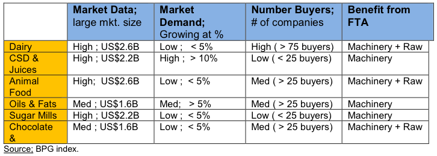

Based on market data and growing demand, and taking into consideration the following recap of market entry of machinery, processing equipment and raw material to supply local food and beverage production, the following sectors are considered the most attractive for U.S. exporters:

Colombia is the third largest dairy products producer in Latin America, after Brazil and Mexico. The dairy sub-sector, along with the following services and equipment offer the best market potential for U.S. exporters: dairy production equipment; bottling services (alcoholic and non-alcoholic); brewery equipment; mixing, grading and filtering apparatus; heat exchangers; filling, sealing and capping; preserved/canned meat and fish products; and horticulture packaging equipment.
Oils and fats processing is another promising industry segment, given that Colombia produces nearly 37.7 percent of total regional production and is listed among the top four producers of crude palm oil yield in the world. The sugars and syrup segment, followed by canned meat, poultry and fish products, as well as fresh vegetable and fruit packaging, are also promising industry niches. Another key prospect is snack processing and packaging equipment. Beverages have been the fastest growing segment so that the National Industry Association (ANDI) has recently created a Beverage Chamber, to provide assistance to companies devoted to this sector.